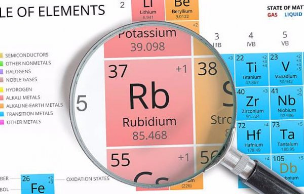
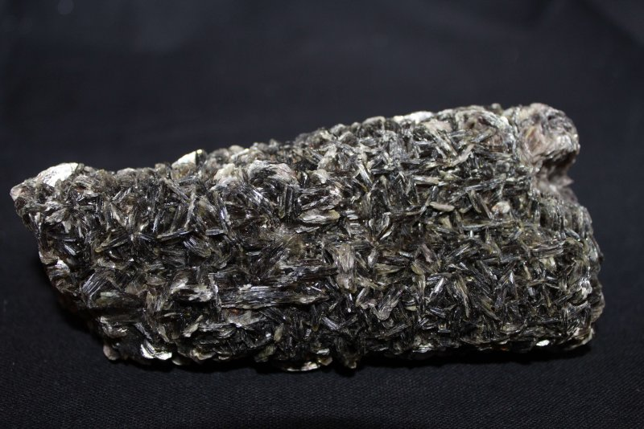
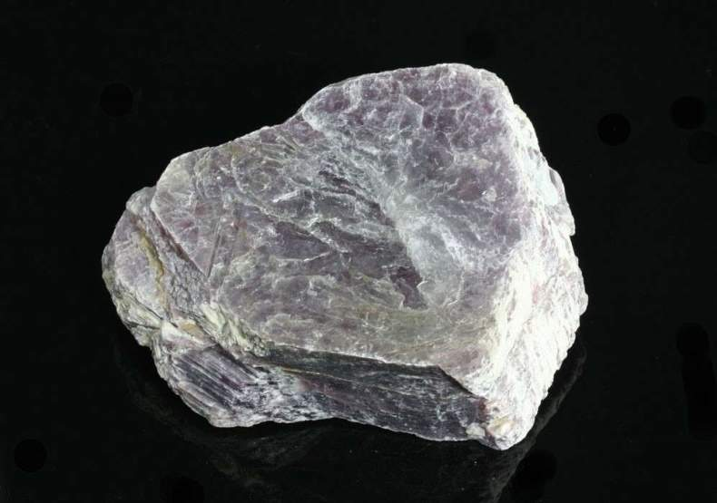

Рубидий
Руби́дий (химический символ — Rb, от лат. Rubidium) — химический элемент 1-й группы (по устаревшей классификации — главной подгруппы первой группы, IA), пятого периода периодической системы химических элементов Д. И. Менделеева, с атомным номером 37.

Открыт в 1861 г. Р. Бунзеном и Г. Кирхгофом при спектральном исследовании солей, выделенных из минеральных вод; назван по цвету характерных линий в спектре (лат. rubidus – тёмно-красный).

Содержание рубидия в земной коре 7,8·10–3 % по массе. Собственных минералов не образует, в природе находится в рассеянном состоянии. Встречается в виде примеси в минералах калия (карналлит, сильвин) и в алюмосиликатах (лепидолит, циннвальдит и др.); присутствует в минералах цезия (поллуцит); находится в озёрной и морской воде, входит в состав вод многих минеральных источников.

Рубидий извлекают при комплексной переработке минерального сырья (например, при получении лития из лепидолита, цезия из поллуцита); объём производства рубидия и его соединений 2–4 т/год (2015). Металлический рубидий – компонент материала катодов для фотоэлементов и фотоэлектрических умножителей, геттер в вакуумных лампах, входит в состав смазочных композиций, используемых в реактивной и космической технике, применяется в гидридных топливных элементах, катализатор. Пары́ рубидия используют в разрядных электрических трубках, лампах низкого давления – источниках резонансного излучения, в чувствительных магнитометрах, стандартах частоты и времени (рубидиевый стандарт частоты). Соединения рубидия – компоненты специальных стёкол и керамики.